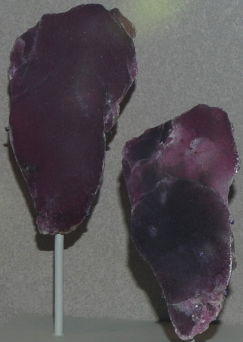
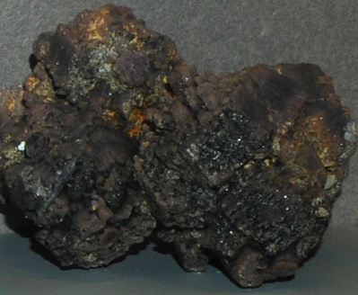
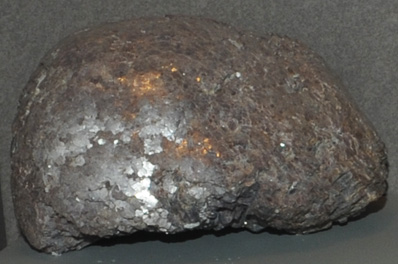
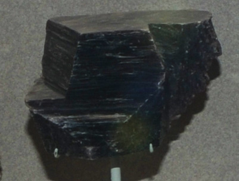
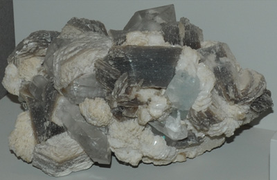
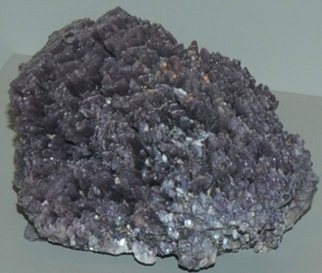
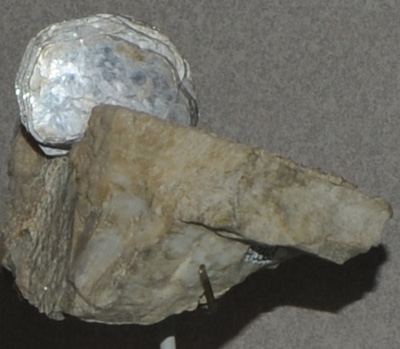
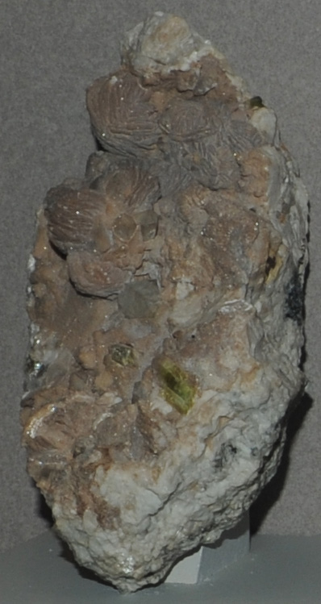
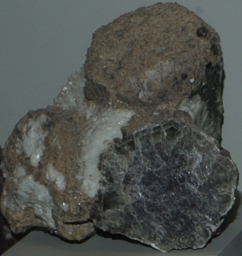

|

This sample is from Brown Derby pegmatite, Gunnison County, Colorado. Each piece is about 10 cm wide. They show the purple color from manganese content.

This is lepidolite with microlite from Virgem da Lapa, Minas Gerais, Brazil. It is about 18 cm across.

This sample is from Alto Ligonha pegmatite district, Niassa, Mozambique. It is about 15 cm across.

This lepidolite sample is from Minas Gerais, Brazil. It is about 12 cm across.

This is lepidolite with beryl and quartz from Gilgit, Northern Areas, Pakistan. It is about 25 cm across.
| 
This sample of lepidolite is from Otjua mine, Karibib, Namibia. It is about 12 cm across.

This is lepidolite with topaz, albite and microcline. It is about 15 cm wide and is from Little Three mine, Ramona, California.

This is lepidolite with quartz and elbaite from Elba, Toscana, Italy. It is about 15 x 30 cm.

This is lepidolite with albite from Afghanistan. It is about 20 cm across.
|